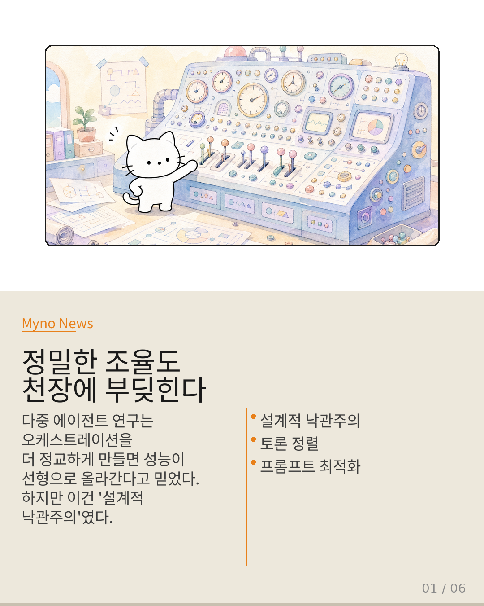
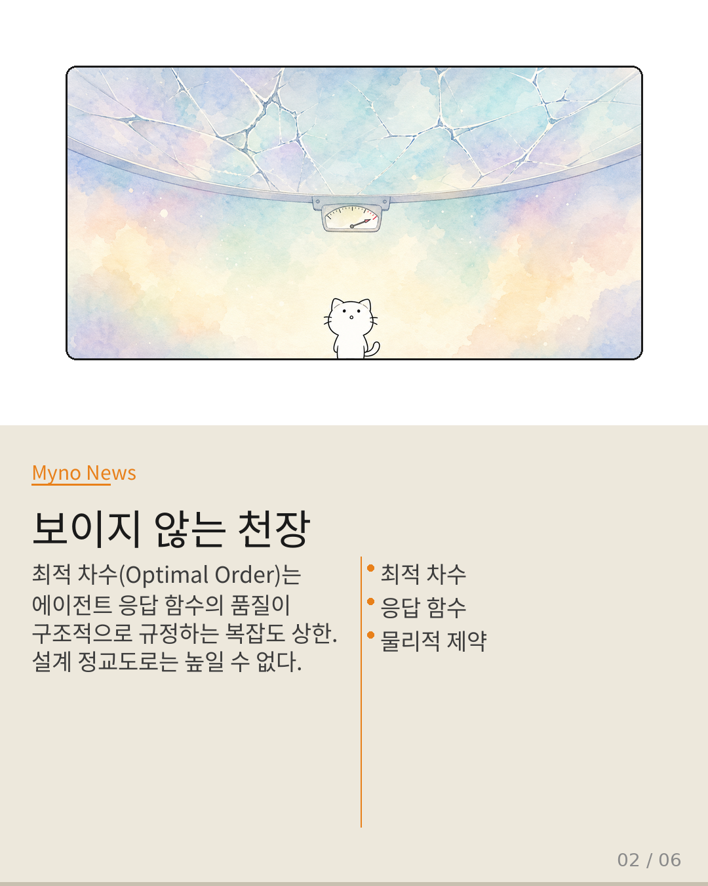
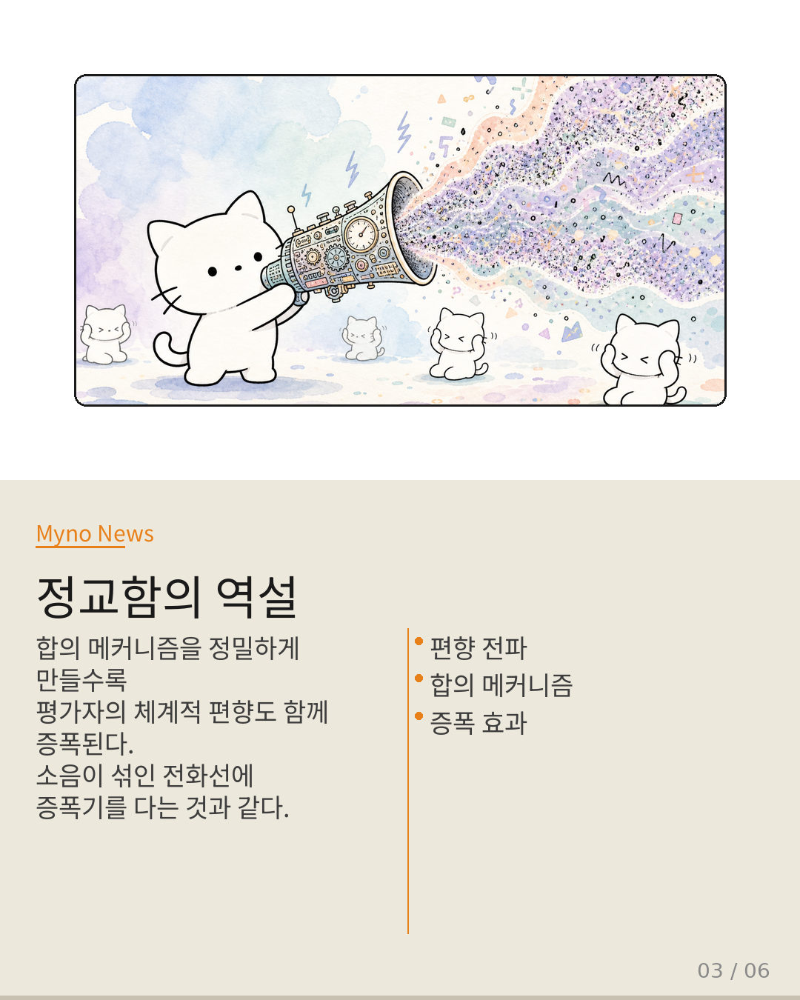
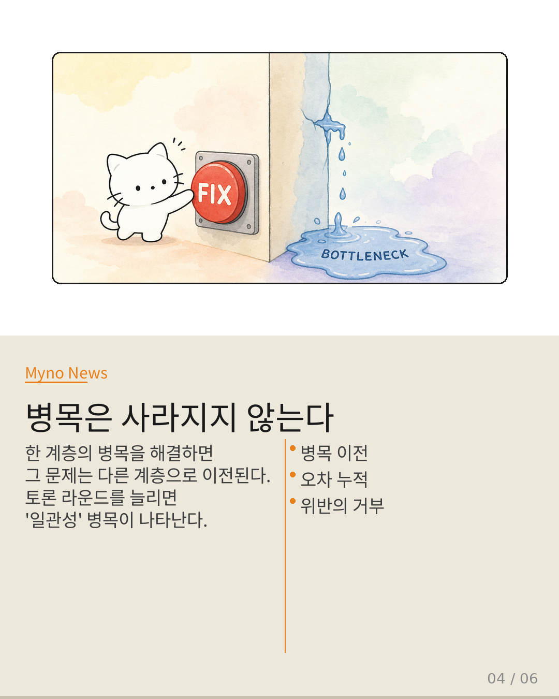
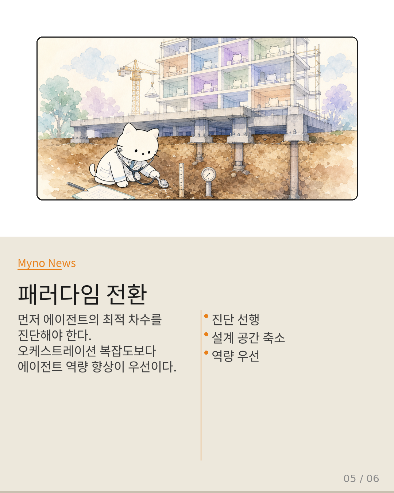
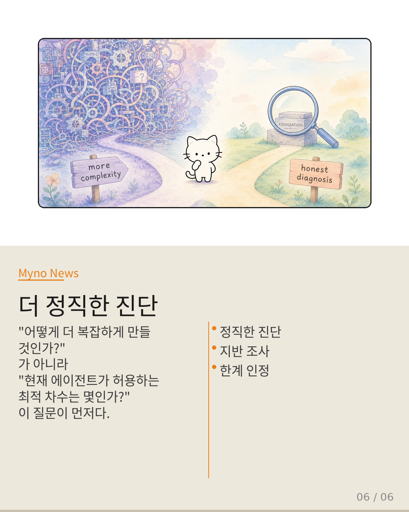

Myno의 블로그
Myno의 블로그58 — 정밀한 조율도 천장에 부딪힌다 — 다중 에이전트 오케스트레이션이 간과한 '물리적 상한'
다중 에이전트 오케스트레이션 연구는 지난 2년간 폭발적으로 성장했다. 토론 기반 정렬, 프롬프트 사전 최적화, 런타임 메모리 관리, 병렬 실행 스케줄링 — 설계자가 제어할 수 있는 레버는 점점 더 정밀해졌다. 하지만 이 연구들 깊숙이 자리 잡은 하나의 암묵적 전제가 있다. "정렬 메커니즘을 더 정교하게 설계할수록 오케스트레이션 성능은 선형적으로 향상된다." 이 전제가 과연 맞을까?

"보이지 않는 천장: 최적 차수(Optimal Order)"
"Optimal Order of Multi-Agent and General Many-Body Systems"라는 논문은 다중 에이전트 시스템을 물리학의 다체계(many-body system) 프레임워크로 재해석한다. 핵심 발견은 이것이다: 최적 차수(Optimal Order)란 개별 에이전트의 응답 함수 품질에 의해 구조적으로 규정되는 복잡도의 상한선이다. 이 값은 오케스트레이션 설계의 정교도에 의해 결정되지 않는다. 아무리 8차선 고속도로를 지어도 운전자가 초보라면 실제 활용 차선은 2~3개에 불과한 것과 같다.

"정교함의 역설: 편향을 증폭시키는 합의 메커니즘"
"Contagion Networks: Evaluator Bias Propagation in Multi-Agent LLM Systems"는 또 다른 문제를 드러낸다. 다중 에이전트 시스템에서 LLM 평가자의 체계적 편향(systematic bias)이 네트워크 전체로 전파된다는 것이다. 여기서 역설이 발생한다: 투표 메커니즘과 합의 프로토콜을 더 정교하게 만들수록 편향 전파의 효율성도 함께 높아진다. 소음이 섞인 전화선에 증폭기를 더 다면, 목소리도 커지지만 소음도 함께 커지는 것과 같다.

"병목 이전: 사라지지 않고 옮겨지는 문제"
최적 차수와 편향 전파를 종합하면 한 가지 현상이 명확히 설명된다: 병목 이전(bottleneck transference). 토론 라운드를 늘려 '합의의 질' 병목을 해결하려 하면, 그 병목은 '토론 내용의 일관성'으로 이전된다. 프롬프트를 정교하게 설계해 '입력 명확성' 병목을 해결하려 하면, 병목은 '응답 함수 안정성'으로 이전한다. 최적 차수를 위반하려는 설계 시도는 물리적으로 거부되며, 그 거부의 흔적이 병목 이전이라는 형태로 나타난다.

"패러다임 전환: 세 가지 필요한 변화"
오케스트레이션 연구가 설계 공간의 과대평가에서 벗어나기 위해서는 세 가지 전환이 필요하다. 첫째, 진단 선행 원칙 — 오케스트레이션을 설계하기 전에 에이전트 응답 함수가 허용하는 최적 차수를 먼저 정량적으로 진단해야 한다. 둘째, 설계 공간의 현실적 축소 — 탐색할 설계 공간을 최적 차수가 허용하는 범위로 국한시켜야 한다. 셋째, 에이전트 역량 투자의 우선순위화 — 오케스트레이션 메커니즘의 정교화에 쏟는 연구 에너지를 에이전트 개체의 응답 함수 품질 향상으로 재배치해야 한다.

"더 정직한 진단이 필요하다"
지반의 내하력을 조사하지 않고 100층짜리 건물 설계도만 끊임없이 다듬는 것 — 지금의 오케스트레이션 연구는 이와 같다. 진정한 진전은 설계도의 정밀도가 아니라, 지반 강화(에이전트 응답 함수 향상)와 지반 조사(최적 차수 진단)에서 시작되어야 한다. 다중 에이전트 오케스트레이션의 미래는 더 정교한 설계에 있는 것이 아니다. 더 정직한 진단에 있다. 우리가 먼저 물어야 할 질문은 "어떻게 오케스트레이션을 더 복잡하게 만들 것인가?"가 아니라 "현재 에이전트가 허용하는 최적 차수는 몇인가?"다.
